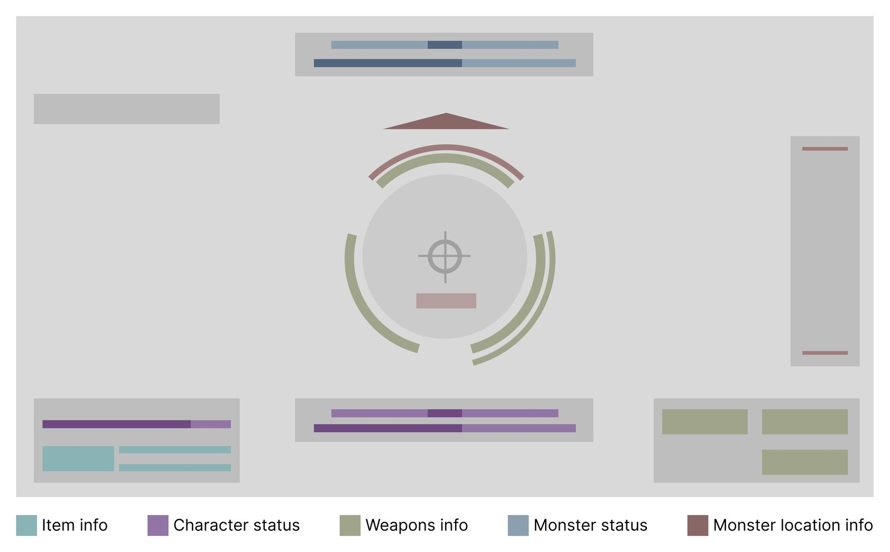
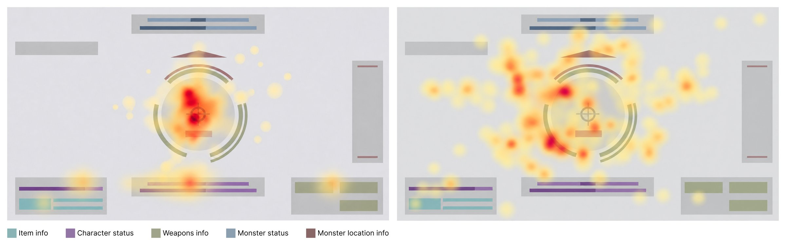
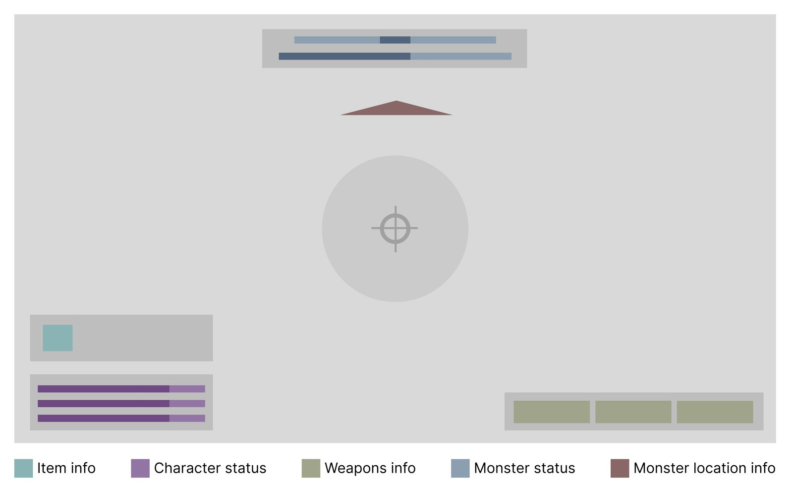
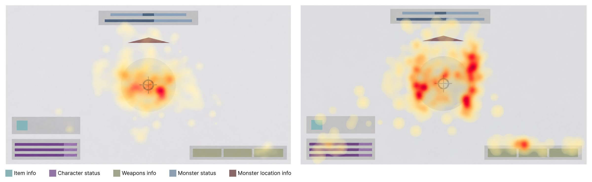

Eye tracking · Game UI · 2026
Eye-Tracking-Informed UI Redesign for a 3D Combat Game
A user research project comparing players’ gaze patterns to simplify combat information and help newcomers understand and engage with the game’s challenges.
The game title used throughout is fictitious, and the images were newly created to illustrate this project.
The interface in question

About the project
TOP MONSTER initially displayed a wide range of combat information to give players comprehensive support. However, players reported difficulty understanding the individual UI elements and perceived the game as difficult.
I investigated how players with different levels of combat understanding used this information. By comparing their gaze patterns and interview responses, I identified the information that proficient players consistently consulted and used these findings to guide a simpler interface for newcomers.
I led and conducted the research independently, while the design team developed the revised UI.
How it ran
Understanding how proficient players use information
I collected eye-tracking data during gameplay and conducted interviews to examine how players understood and monitored combat information.
Players who understood the game well tended to focus on four areas: the monster itself, character status, monster status, and ammunition information. Their gaze patterns provided a reference for understanding how players coordinated attention between the combat target and supporting information.
Interpreting these patterns alongside interview responses helped identify three UI information categories to prioritize in the redesign.

Example of a proficient player
Example of a novice player
Simplifying the interface around key information
Based on these findings, the design team reorganized the interface around character status, monster status, and ammunition information.
The redesigned UI presented a smaller set of combat information, supporting players in monitoring the monster and consulting relevant status information during combat. I provided the research findings and information priorities, while the design team was responsible for the visual redesign.

Evaluating the experience of newcomers
The same 40 participants took part in evaluations before and after the redesign, with approximately three months between sessions. I evaluated the revised interface through eye-tracking data, interviews, and statistical comparisons of combat performance.
Players who were initially unfamiliar with the game reported that the simplified interface helped them focus on combat using the information provided. Their gaze distributions also became more similar to those of proficient players, and combat clear rates increased following the redesign.

Example of a proficient player
Example of a novice player
What it changed
Together, these findings supported the simplified UI as a way to make combat more approachable for newcomers. By helping players understand and use essential information, the redesign enabled them to engage more effectively with the game’s combat challenges.